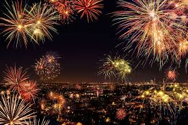

Diwali is one of the main festivals of Hindus. The preparation for Diwali celebration begins weeks before the festival. People begin with the preparations by cleaning their houses and shops. Every nook and corner of the houses, shops and offices is cleaned before Diwali. These are then decorated with lights, lamps, flowers and other decorative items.
Hindus believe that his return was welcomed by the people of Ayodhya by lighting up the streets and houses by small earthen oil lamps; therefore, the Hindus celebrate the day as the festival of lights. Houses decorated with lights of different colours and sizes, earthen lamps glittering at the entrances and over the boundaries and railings make the view mesmerizing. People come out of their houses in new clothes and burn crackers and fireworks.
Hindus believe that his return was welcomed by the people of Ayodhya by lighting up the streets and houses by small earthen oil lamps; therefore, the Hindus celebrate the day as the festival of lights. Houses decorated with lights of different colours and sizes, earthen lamps glittering at the entrances and over the boundaries and railings make the view mesmerizing. People come out of their houses in new clothes and burn crackers and fireworks.
People shop for new clothes, home decor items and gifts for their loved ones on this festival. The markets are flooded with variety of gift items and sweets around this time. It is a good time for the businessmen. It is also a good time to bond with our near and dear ones. People visit each other around this time and exchange gifts as a part of the celebration.On the day of Diwali, people light up their houses with diyas, candles and lights. They also make rangoli and decorate their houses with flowers. The ritual of worshipping Goddess Lakshmi and Ganesha is followed in every Hindu household on the occasion of Diwali. It is said that this brings in prosperity and good luck.